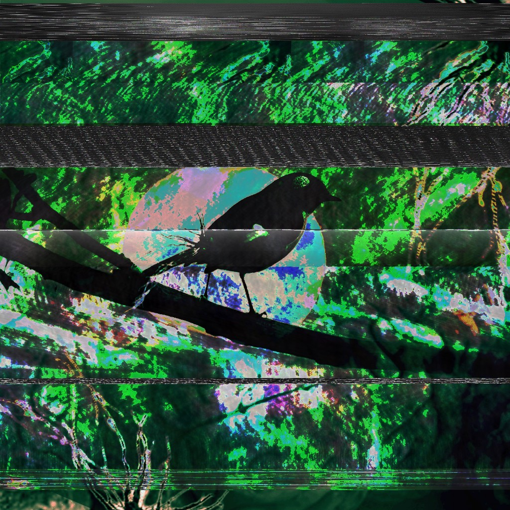
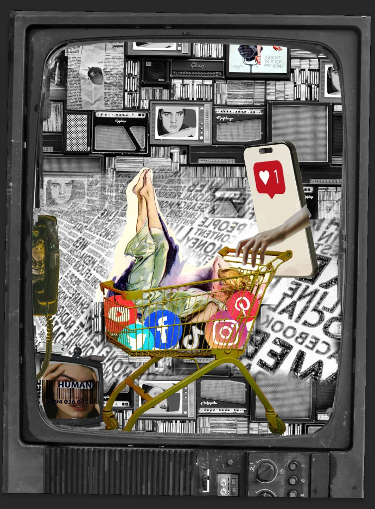
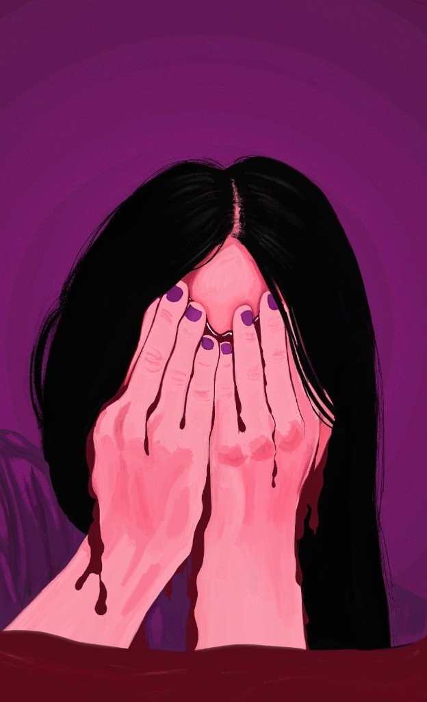
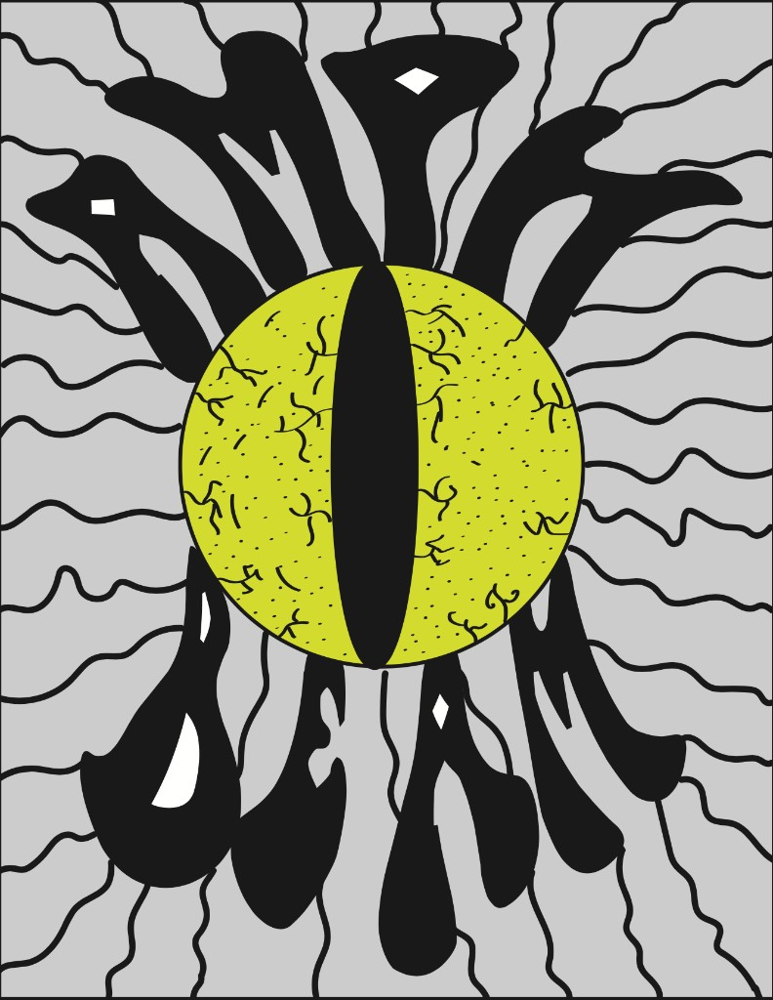
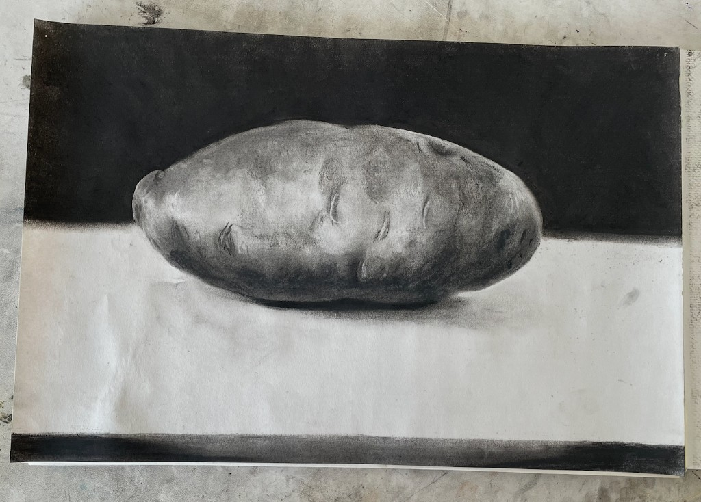
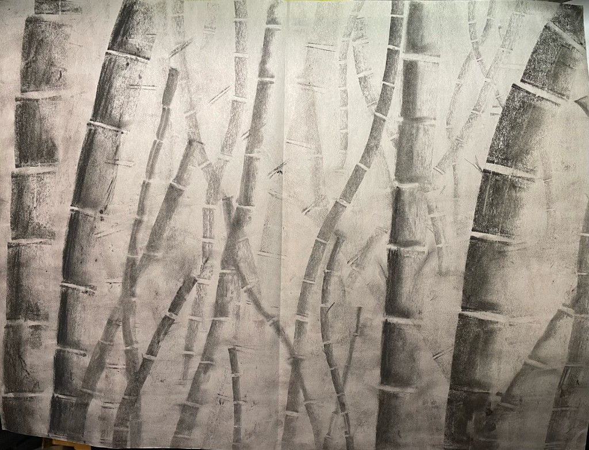

Digital Media Art Portfolio — San José State University

This piece explores a dystopian and unsettling atmosphere through layered digital imagery. I combined photographs in Photoshop, including a silhouetted bird and a night setting, to create a scene that feels distorted and unfamiliar. The green tones and glitch effects are inspired by night vision imagery, giving the impression of viewing the outside world through a mediated or restricted perspective. I focused on creating a sense of distance and unease, where the subject appears fragmented and partially obscured, as if seen through a malfunctioning or outdated screen.

“Packaged for You” explores influencer culture and the ways social media encourages self-presentation as a form of consumption. The composition reflects how individuals are often “packaged” for visibility, shaping identity around likes, views, and online engagement. I used digital collage to combine imagery of shopping and media, emphasizing how technology influences behavior and decision-making. The phone gripping the shopping cart symbolizes control, suggesting how digital platforms can guide attention, spending, and self-image within a highly mediated environment.

“Bleeding Silence” explores themes of vulnerability, self-consciousness, and emotional suppression. The figure covers their face as an attempt to hide feelings of discomfort or shame, yet those emotions continue to emerge through the surrounding space. The bleeding forms suggest that what is being concealed cannot be fully controlled or contained. I used digital painting techniques to emphasize contrast and color intensity, allowing the emotion to feel present even when the subject attempts to obscure it. The piece reflects the tension between concealment and visibility.
This composite addresses environmental destruction through a shared landscape of fire, pollution, and marine harm. As a group, we built the full scene by combining illustrated and collage elements into one narrative image.
My individual contribution was the seal illustration, the distressed seal entangled in plastic in the underwater section of the piece. I developed that figure to anchor the marine pollution theme and connect visually to the rest of the collaboration.

This graphic composition explores repetition, symmetry, and visual rhythm through bold shapes and high contrast. The central eye form acts as a focal point, surrounded by abstract organic patterns that create movement and tension within the image.

This still life study focuses on value, form, and shading. Through careful observation and mark making, I developed tonal contrast to create depth and volume. The piece demonstrates foundational drawing skills and attention to light and surface.

This charcoal drawing explores structure, depth, and metaphor through the repetition of bamboo forms. The bamboo along the edges appears more upright and stable, while the forms toward the center become more curved and entangled, creating a sense of movement and complexity. A lighter pathway through the center guides the eye inward, suggesting a progression through space. Conceptually, the piece reflects personal growth, where early stages feel more direct, while later experiences become more complicated and require adaptation. I focused on mark variation and tonal contrast to emphasize both structure and flow.
With my work I mainly try to visualize things that are usually not easily vocalized, like how we experience emotion, identity, and self-perception. I find it really interesting how we choose to present ourselves to the world and how digital environments like social media put a strange pressure on how we appear. Through my projects I use a mix of digital collage, video, web design, and sculpture to explore both the control we have over our image and the ways it ends up reshaping us.
A big part of what I create involves the tension between visibility and concealment. In pieces like “Bleeding Silence,” I explore emotional suppression and how vulnerability often leaks out even when we try to mask it. I’m also interested in how digital tools can distort our view of reality. In “Birdbrains,” I used glitch effects and layered imagery to create a sense of distance from the natural world, reflecting how our perception can become fragmented.
I also think a lot about how digital spaces turn people into products. In “Packaged for You,” I looked at influencer culture and the pressure to present ourselves as “consumable content.” I brought this into an interactive space with “Shapeshifter Hotel,” where users navigate through rooms that represent different states of identity, like fragmentation and reconstruction. For me, interaction is key; I want the viewer to be an active participant who has to navigate these ideas rather than just standing back and looking at them.
My process is built on trial and error. I usually start with a loose concept and experiment with techniques to see what sticks. It’s an iterative process where the technical growth and the idea develop at the same time. Whether I’m focusing on the timing and pacing of a video like “Dancing Cat Party” or experimenting with a physical material, I’m interested in how a specific texture, timing, or interaction can shift the meaning of the work.
By pursuing a BFA, I want to bridge the gap between my technical skills and my conceptual goals. I’m looking to get more critical feedback and push my work in interactive and digital formats further. Ultimately, I want to create work that feels personal but also reflects the complicated ways we all try to understand ourselves in both physical and digital worlds.
I am a Digital Media Art student at San José State University interested in combining digital and traditional media to explore themes of identity, environment, and perception.
“Banana Stitch” is a soft sculpture inspired by the banana objects used in games such as Mario Kart. I constructed the form using hand-sewn fabric, focusing on soft materials and shape. The inside of the banana is removable, introducing an interactive element that allows the viewer to physically engage with the piece. This feature transforms it from a static object into something more playful and participatory, exploring how interaction can change the experience of a familiar form.
“From Page to Reality” is a papier-mâché sculpture depicting a jackalope emerging from an open book. Inspired by a story about fictional characters coming to life, the piece explores the transformation of imagination into physical form. I chose the jackalope for its balance of charm and unease, combining playful and slightly eerie qualities. Using papier-mâché and wire, I constructed the figure to appear mid-motion, with the form extending outward from the pages. The piece emphasizes movement and structure, capturing the moment where a fictional creature becomes tangible and alive.
“Dancing Cat Party” is a video editing project that explores rhythm, timing, and visual emphasis through a stylized sequence of dancing cat footage. I manipulated the speed of individual clips to create variation and energy, while adjusting lighting and color to reflect different party-like environments. I introduced contrasting color tones, such as red and blue lighting, to divide the space and create visual interest. The piece is intended to be comedic, playful, and lighthearted, using humor and exaggeration to create an engaging and entertaining visual experience.
“Shapeshifter Hotel” is an interactive web-based experience that explores identity, transformation, and fragmentation through a series of navigable rooms. Each door presents a different possibility, but not all are accessible some remain locked, while others reflect hesitation and the choice not to enter. These barriers introduce a sense of uncertainty and control, emphasizing that not every part of the self can be easily explored. Through movement between spaces, including moments of breaking apart and reconstruction, the project uses digital interaction to represent identity as unstable, selective, and constantly evolving.
This project is a real-time interactive web application developed collaboratively using Node.js and WebSockets. It allows multiple users to join a shared session, choose usernames, and interact through multiplayer gameplay and a live chat system. The project explores how networked technology enables connection and collaboration across distance. In this project, I designed the user interface and interactive elements, focusing on user engagement and responsiveness. I implemented animated chat features, including a character that reacts to messages, and developed a level and point system to encourage participation, creating a dynamic shared environment.